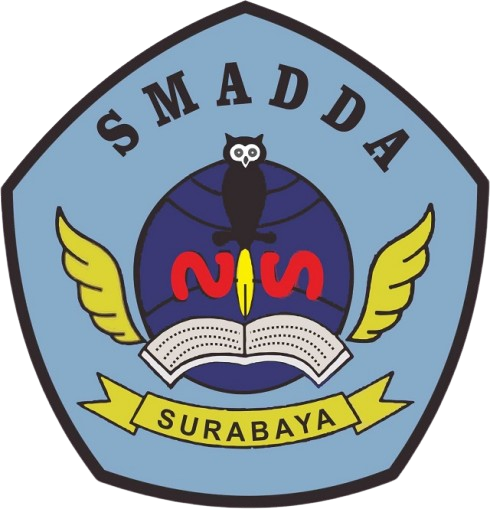
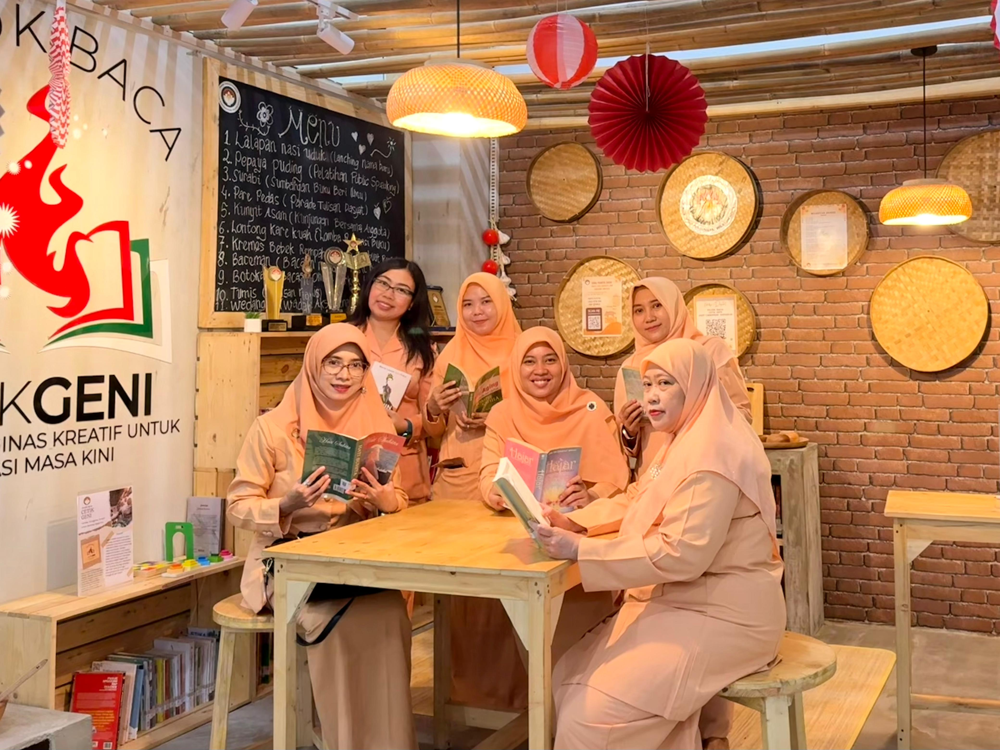
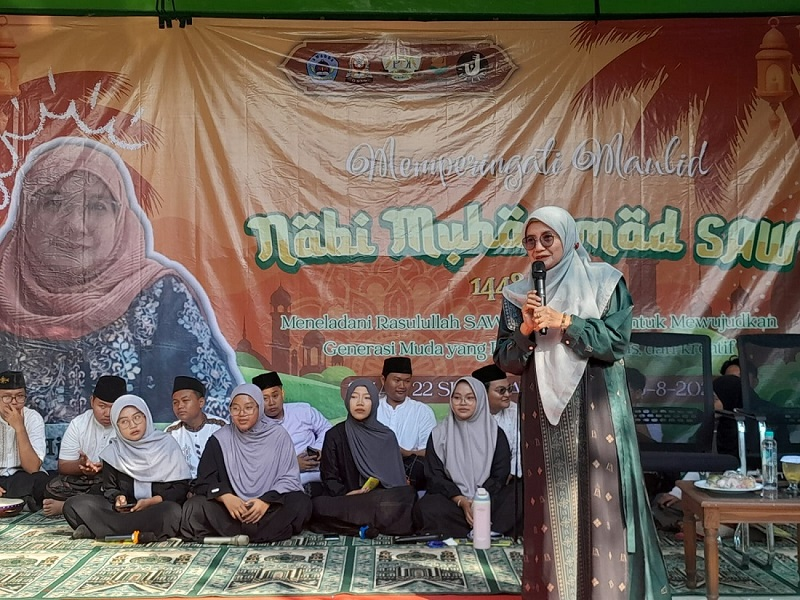
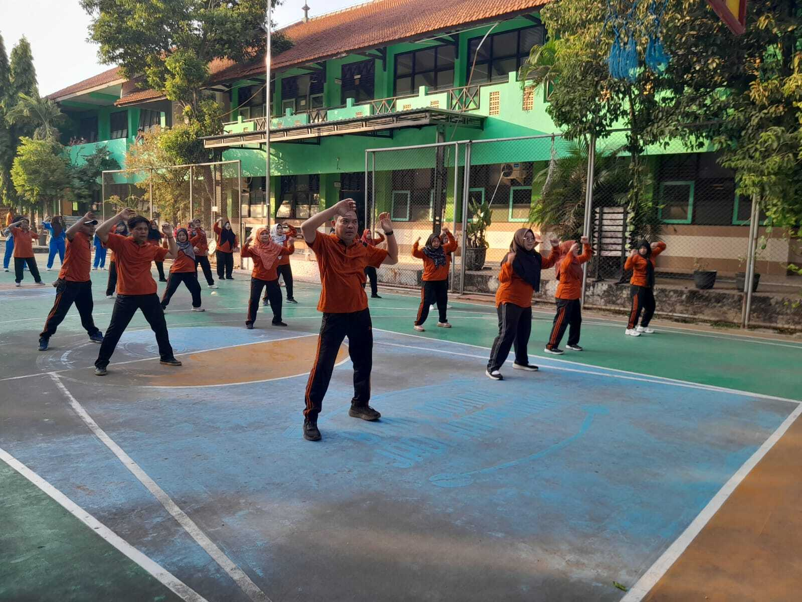

"SMADDA LIKES YOUR FUTURE WITH CHARACTER"
SELAMAT DATANG
Profesional, berorientasi pada Imtak, Iptek, dan budaya bangsa serta menjadi kebanggaan warga wiyata mandala dan masyarakat.
Lihat JurusanProgram Jurusan
Perkiraan Kelas
Perkiraan Siswa
Likes Your Future With Character
SAMBUTAN KEPALA SEKOLAH
Salam,
Selamat Datang di SMA NEGERI 22 SURABAYA. Portal ini kami maksudkan sebagai media penyampaian informasi tentang SMA NEGERI 22 SURABAYA JATIM. Banyak hal yang dapat kami informasikan di portal ini. Seiring dengan perkembangan teknologi informasi yang begitu pesat, kita dituntut untuk dapat mengikutinya sehingga kita dapat mengakses berbagai macam informasi dengan cepat dari manapun.
Dengan tujuan pendidikan, diharapkan Portal ini menjadi wahana pembelajaran bagi siswa-siswi SMA NEGERI 22 SURABAYA JATIM dan masyarakat luas umumnya. Kami menyadari, masih banyak kekurangan di Portal ini. Oleh karena itu, pemikiran, ide serta sumbang saran akan kami hargai demi perbaikan dan pengembangan Portal ini di masa yang akan datang.
Kepala SMA NEGERI 22 SURABAYA,
AGUS SETIAWAN, S.Pd, M.Pd
Pembina Utama Muda / IVc
NIP. 19751030 200012 1 001
VISI
Profesional, berorientasi pada Imtak, Iptek, dan budaya bangsa serta menjadi kebanggaan warga wiyata mandala dan masyarakat.
MISI
AKTIVITAS SEKOLAH
Berbagai kegiatan dan aktivitas yang dilaksanakan di SMA Negeri 22 Surabaya.

Kegiatan Dharma Wanita Persatuan SMA Negeri 22 Surabaya.
Baca Selengkapnya →
Kegiatan peringatan Maulid Nabi Muhammad SAW di SMA Negeri 22 Surabaya.
Baca Selengkapnya →
Kegiatan Jumat Sehat sebagai bagian dari aktivitas warga sekolah.
Baca Selengkapnya →